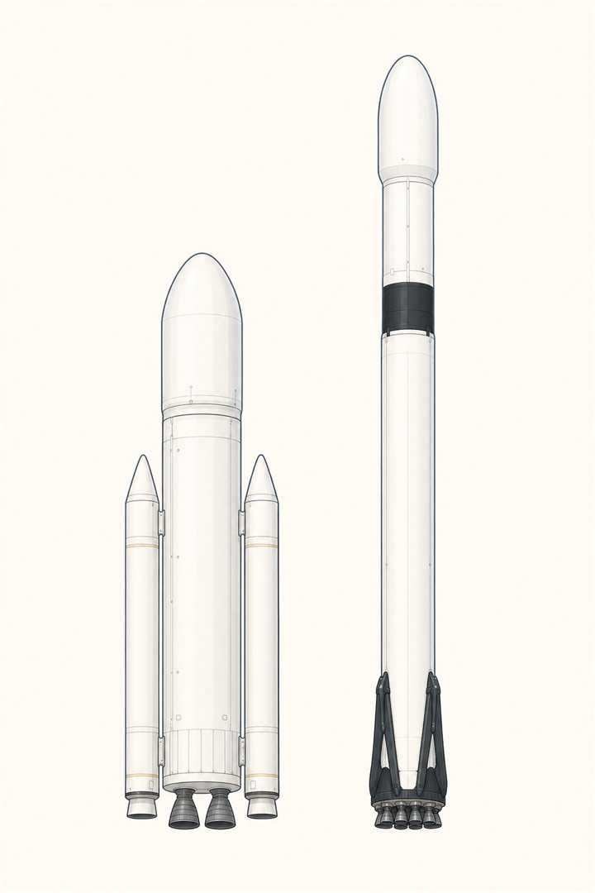

じっさいの機体で、答え合わせ
最終話は、教科書を閉じて実物を見にいきます。日本のH3と、アメリカのFalcon 9。同じ「衛星を軌道へ運ぶ道具」なのに、設計思想は見事に対照的です。これまで8話ぶんの言葉が、そのまま読解の道具になります。まずは2機をタップしてください。

| H3 | Falcon 9 | |
|---|---|---|
| 全高 | 63 m | 70 m |
| 低軌道へ | 〜16.5 t | 22.8 t（使い捨て時） |
| 1段エンジン | LE-9 ×2〜3 | Merlin 1D ×9 |
| サイクル | エキスパンダーブリード | ガス発生器 |
| ブースタ | SRB-3 ×0/2/4 | なし |
| 1段目のゆくえ | 海に捨てる | 通常は着陸・再使用 |
そして卒業試験です。下の章番号をタップすると、その章の言葉でこの2機を読み解きます。8話ぶんの言葉が全部、実機のどこかにつながっていることを確かめてください。
よりみち再使用は、ほんとうに得なのか
Falcon 9の1段目は、着陸脚・グリッドフィン・着陸用の残り推進剤をいつも持ち歩いています。その分ペイロードは確実に減る——第1話のロケット方程式が課す、正直な税金です。それでも合計の勘定で勝てるのは、エンジン9基を抱えるいちばん高価な1段目を、何十回も使い回せるから。いっぽうH3は「使い捨てを徹底的に安く作る」ほうに賭けました。部品を自動車産業から調達し、エンジンは壊れる要素の少ないブリードサイクルに。「回収の税金を払う」か「製造の値段を下げる」か——同じ式を見て、ふたつのチームが別の答えを出したのです。
よりみちLE-9スポットライト — この連載の主役級
| 推力（真空） | 1,471 kN |
|---|---|
| 比推力（真空） | 422 秒 |
| 燃焼室圧 | 約 10 MPa |
| サイクル | エキスパンダーブリード（世界初のブースタ級） |
プリバーナを持たない、燃やさずに沸かして回すエンジン（第4話）。爆発的に壊れるモードが構造的に少なく、「安全なエンジン」を設計思想の芯に据えています。その心臓のターボポンプ（第5話）は、これからあなたが関わっていく世界です。この図鑑の言葉たちが、現場の議論のどこかで役に立ちますように。
🌀流体屋のためのノート — 第1巻の地図
連載を流体力学の地図に重ねて締めくくります。圧縮性流れはノズル（第6話）に、ターボ機械はポンプ（第5話）に、二相流はキャビテーションと無重力の沈底（第5・7話）に、流体構造連成はPOGO（第8話）に、空力音響は発射台の爆音（第8話）に、それぞれ住んでいました。ロケットは「流体力学の全分野が極端な条件で同居する家」です。ここから先へ進むなら、Sutton『Rocket Propulsion Elements』と、無料で読めるNASA SP-8000シリーズが最良の次の一歩です。
第1巻 ロケット編 ── かんけつ
外がわから、内がわへ。ぜんたいから、細部へ。
読んでくれてありがとう。第2巻は飛行機編を予定しています ✈
・JAXA H3ロケット公開資料／Wikipedia H3 (rocket)・LE-9（全高63m・LEO 16.5t・GTO 4.0〜7.9t）
・SpaceX Falcon 9 公表スペック／Wikipedia Falcon 9（全高69.8m・LEO 22.8t・GTO 8.3t）
・G. P. Sutton & O. Biblarz, Rocket Propulsion Elements, 9th ed.
・機体イラストは実機の構成（ブースタ数・段間部・脚）を模した簡略画です